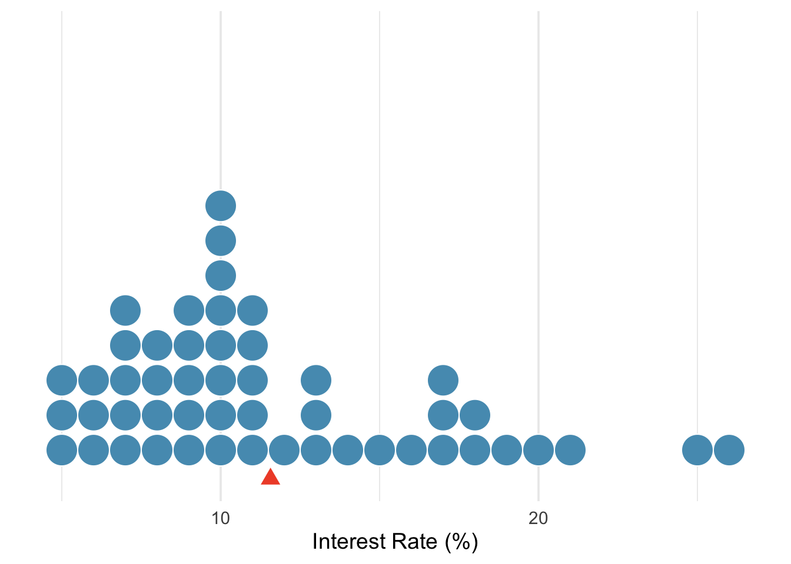
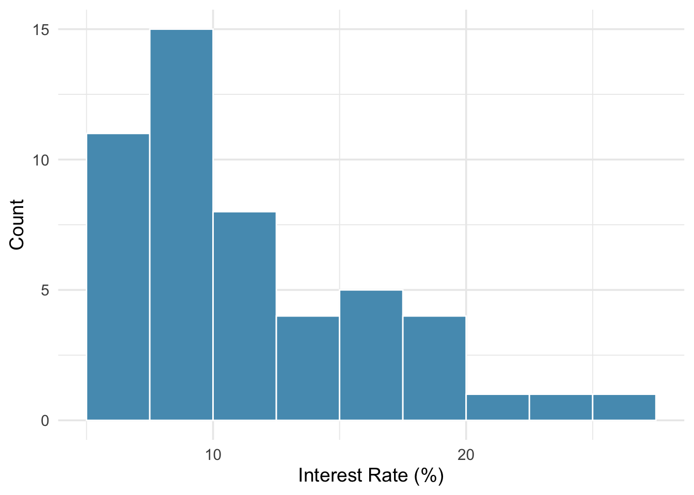
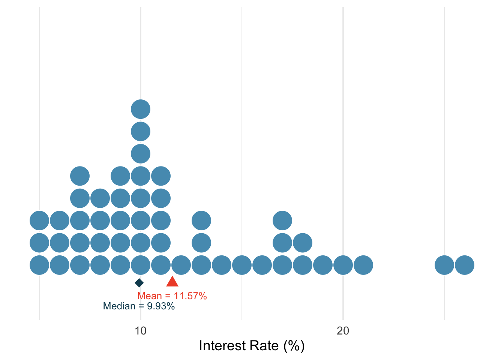
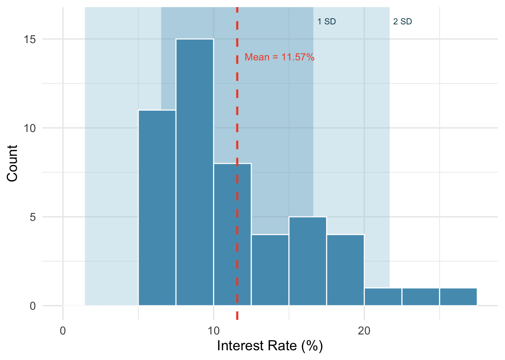
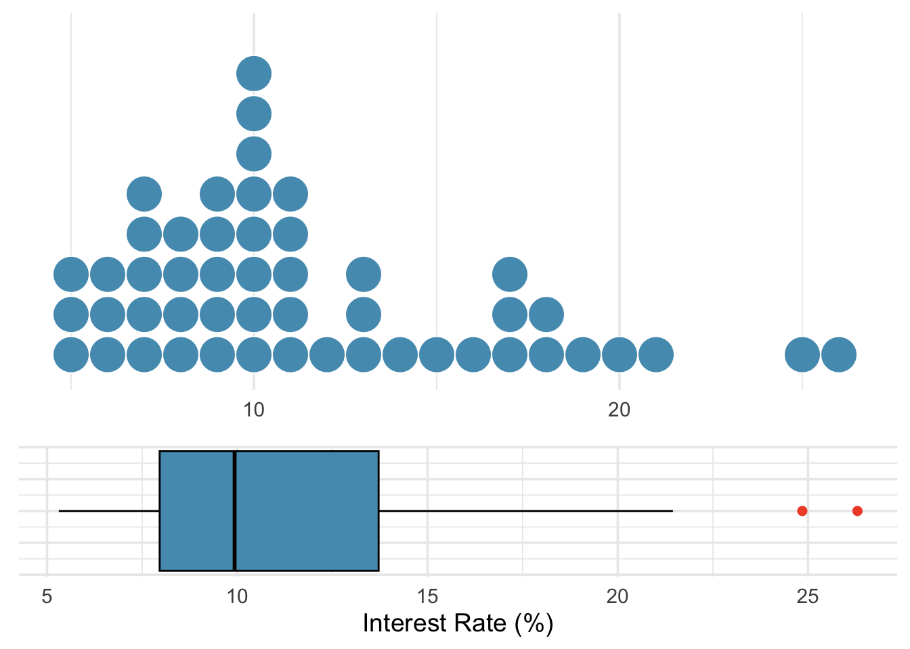
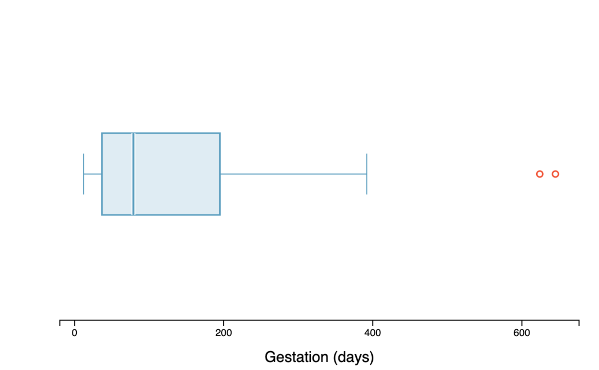
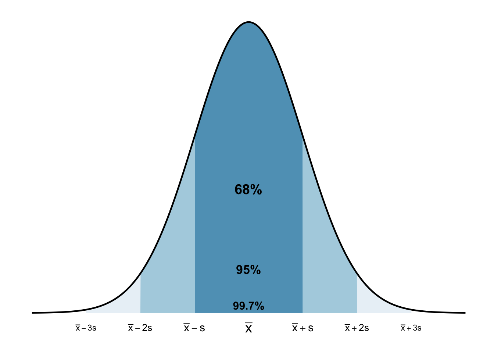

1.4 Exploring Quantitative Data
In the previous chapter we explored categorical data. Now we turn to quantitative data — variables that take numerical values where arithmetic makes sense (heights, incomes, interest rates). This chapter teaches you to both see and measure distributions. We introduce dot plots and histograms alongside the mean and median, box plots alongside the IQR, and the standard deviation alongside histogram shapes. By the end, you will be able to describe any distribution in terms of its shape, center, spread, and unusual features.
Key Concepts
- Understand the difference between displays of categorical and quantitative data
- Use a dotplot or histogram to describe the shape of a distribution
- Calculate the mean and the median for a set of data values, with appropriate notation
- Identify the approximate locations of the mean and the median on a dotplot or histogram
- Explain how outliers and skewness affect the values for the mean and median
- Recognize the uses and meaning of the standard deviation
- Interpret a five number summary
- Use the range, the interquartile range, and the standard deviation as measures of spread
- Describe the advantages and disadvantages of the different measures of spread
- Identify outliers in a dataset based on the IQR method
- Use a boxplot to describe data for a single quantitative variable
- Use the emperical rule to estimate the middle 68%, 95%, or 99.7% for bell-shaped distributions
- Use technology to compute summary statistics for a quantitative variable
Technology for Chapter
StatLens Use the One Quantitative Variable to visualize distributions as histograms, dot plots, or box plots, and compute means, medians, standard deviations, and quartiles for any dataset.
jamovi Use Analyses>Exploration>Descriptives to visualize distributions as histograms or box plots, and compute means, medians, standard deviations, and quartiles for any dataset.
Dot Plots and Histograms
Dot Plots
A dot plot is the simplest display for a single quantitative variable. Each observation is represented by a dot placed above its value on a number line. When observations share the same value (or are rounded to the same value), the dots stack vertically.
Consider the interest rates on 50 loans from a lending platform. In a dot plot, each of the 50 loans is a single dot. The red triangle marks the mean.
Dot plots are most useful for small datasets (up to about 50–100 observations) where you want to see every individual value. For larger datasets, histograms provide a better summary.
A histogram groups quantitative data into bins (intervals) and displays the count or proportion of observations in each bin as a bar. Unlike bar charts for categorical data, histogram bars touch each other because the bins represent a continuous range of values.
Histograms
To build a histogram, we:
- Choose a bin width (e.g., 2.5 percentage points for interest rates)
- Count how many observations fall in each bin
- Draw bars whose heights equal the counts

A distribution is considered symmetric if we can fold the plot over a vertical center line and both sides match closely.
A distribution is considered skewed left if the longer tail of the distribution is to the left.
A distribution is considered skewed right if the longer tail of the distribution is to the right.
Histograms are especially useful for identifying the shape of a distribution. One key characteristic is symmetry. When we say a distribution is symmetric it means that the left-side of a distribution is very similar to the right-side of the distribution. We say a distribution is skewed left when the tail of the distribution is longer on the left. Similarly, we say that a distribution is skewed right when the tail of the distribution is longer on the right.
Class Example 1.4.1: Shape of the interest rates
Describe the shape of the histogram for the interest rate plot.
Measures of Center: Mean and Median
The mean of a data set is the sum of all its values divided by the number of observations.
The median of a dataset is the middle entry of an ordered list of data. If there are an even number of entries, then we take the average of the middle two values.
One type of numerical summaries you will see for a dataset is called measures of center. Measures of center, provide us with a single number that best describes a quantitative variable’s distribution. Essentially, they give us a guess of what a typical value would look like. There are two measures of center we will use in this class: the mean and median.
The mean
The mean of a sample tells us the average. For a sample of observations \(x_1, x_2, \ldots, x_n\), the mean is given by \[ \text{Mean} = \frac{x_1 + x_2 + \cdots + x_n}{n} = \frac{\sum_{i=1}^n x_i}{ n } \] where \(n\) is the number of observations.
Notation:
\(\mu\): population mean
\(\overline{x}\): sample mean
We will use \(\mu\) (pronounced “mew”) to represent the population mean and \(\overline{x}\) (read “x-bar”) to represent the sample mean. We often cannot measure \(\mu\) directly because we rarely have access to every member of the population. Instead, we estimate \(\mu\) using the sample mean \(\bar{x}\).
The median
The median, denoted \(m\), divides the sample into two groups of equal size. We find the median by following two steps:
- Sort the sample values.
- Find the middle value:
- If \(n\) is odd, the median is the middle value in the sorted list.
- If \(n\) is even, the median is the average (midpoint) of the middle two values in the ordered list.
The dot plot below shows both the mean and the median marked on the interest rate data. Notice that the median (9.93%) is lower than the mean (11.57%) — the few loans with very high interest rates pull the mean to the right, but the median stays anchored in the middle of the data.

Class Example 1.4.2: Ants on a sandwich
The number of ants climbing on a piece of a peanut butter sandwich left on the ground near an anthill for a few minutes was measured 7 different times, and the results are: 43, 59, 22, 25, 36, 47, 19
- Calculate the mean number of ants.
- Calculate the median number of ants.
- Suppose one of the sandwich bits was extremely appealing to the ants, and instead of 59, the number of ants for that bit was actually 159, giving the 7 values as: 43, 159, 22, 25, 36, 47, 19. Compute the mean and median for this new dataset.
- Which statistic (mean or median) is impacted most by the outlier?
How skewness affects the mean and median
In a symmetric distribution, the mean and the median are approximately equal (\(\text{mean} \approx \text{median}\)). In a right-skew distribution, the mean is pulled towards the right tail and is larger than the median (\(\text{mean} > \text{median}\)). In a left-skewed distribution, the mean is pulled towards the left tail and is smaller than the median (\(\text{mean} < \text{median}\)).
When to use then mean vs. the median
As we saw in the last example, the median is not impacted by extreme data values (outliers) like the mean is. We say that the median is resistant. Although the mean is a more commonly used measure of center, the median may be preferred in cases with extreme values or a high degree of skew.
If the concern is the total or aggregate, the mean is the best. If the concern is a typical observation, the median is preferred, especially when the distribution is skewed or contains extreme values.
Measures of Spread
A measure of spread tells us how much variability exists in the data.
Knowing the center of a distribution is important, but it tells only part of the story. Two distributions can have the same center but look very different if one is tightly clustered and the other is widely dispersed. We need measures of spread (also called variability or dispersion).
The range
The range is the difference between the maximum and minimum of the data.
The simplest measure of spread is the range: the difference between the maximum and minimum values. \[ \text{Range} = \text{Maximum} - \text{Minimum} \]
While easy to compute, the range has a major weakness: it depends entirely on the two most extreme observations. A single extreme value can dramatically increase the range, giving a misleading impression of the overall variability. For this reason, we usually prefer the IQR or standard deviation.
The interquartile range (IQR)
The IQR (Interquartile range) is the difference between the 1st and 3rd quartiles of the data.
The interquartile range measures the spread of the middle 50% of the data. To find the IQR, we need to first estimate \(Q_1\) and \(Q_3\), the first and third quartiles. The first quartile, \(Q_1\), is the value which 25% of the data falls below; and the third quartile, \(Q_3\), is the value which 75% of the data falls below. To find \(Q_1\), we need to take the median of all the values below the median. To find \(Q_3\), we need to take the median of all the values above the median. The IQR is given by \[ \text{IQR} = Q_3 - Q_1. \]
The five-number summary
A way to combine the information from the range, the IQR, and a measure of center is through the five-number summary. The five-number summary consists of the minimum, \(Q_1\), the median, \(Q_3\), and the maximum of the data set.
Class Example 1.4.3: Ants revisited
In the previous example, we found that for the 7 different times, the results were 19, 22, 25, 36, 43, 47, 59 (sorted in ascending order)
- Find the five number summary for this data.
- Find the IQR for this data
- Find the range for this data
- Find the range and IQR if the value 59 was actually 159?
- Which statistic (range or IQR) is impacted most by the extreme value?
Variance and standard deviation
The standard deviation of a variable is a rough estimate of the typical distance of a data value from the mean.
A deviation is the difference between between an observation and the mean
The variance is the average of the squared deviations.
The standard deviation is the most commonly used measure of spread. The standard deviation gives an estimate for the average distance each observation is from the mean.
We start with the concept of a deviation: the distance of an observation from the mean.
\[\text{deviation of } x_i = x_i - \bar{x}\]
Some deviations are positive (observations above the mean) and some are negative (observations below the mean). If we simply averaged the deviations, the positives and negatives would cancel out, giving us zero. To avoid this, we square each deviation before averaging. The average of the squared deviations, using \(n-1\) in the denominator is the variance and is given by
\[\text{Variance} = \frac{\sum_{i=1}^{n}(x_i - \bar{x})^2}{n-1} = \frac{(x_1 - \bar{x})^2 + (x_2 - \bar{x})^2 + \cdots + (x_n - \bar{x})^2}{n-1}\]
The standard deviation is the square root of the variance:
\[\text{Standard Deviation} = \sqrt{s^2} = \sqrt{\frac{\sum_{i=1}^{n}(x_i - \bar{x})^2}{n-1}}\]
Notation:
\(\sigma\): population standard deviation
\(s\): sample standard deviation
In this course, we will use \(\sigma^2\) (pronounced “sigma squared) to represent the population variance and \(s^2\) to represent the sample variance. We will use \(\sigma\) (pronounced”sigma”) to represent the population standard devation and \(s\) to represent the sample standard devation. When the standard deviation is large, it means there is a lot of variability amongst the observations. When the standard deviation is small, it means there is a lot of consistency amongst the observations.
Looking back at the interest rate data with shaded bands marking one and two standard deviations from the mean. The standard deviation of 5.05 percentage points gives us a sense of how spread out the data are around the mean of 11.57%.

The standard deviation tells us that interest rates typically deviate about 5 percentage points from the mean (11.57%).
Class Example 1.4.4: Ants revisited
- Find the standard deviation of the ants on a sandwich data.
- Find the standard deviation of the data if the value 59 was actually 159.
Outliers and Robust Statistics
Identifying outliers
An outlier is a data point that is unusual given the rest of the data.
An outlier is an observation that appears extreme relative to the rest of the data. A common rule for identifying outliers is the 1.5 IQR rule: A data value, \(x_0\) is considered to be an outlier if \[ x_0 < Q_1 - 1.5 (IQR) \quad \text{or} \quad x_0 > Q_3 + 1.5 (IQR). \]
Examining data for outliers serves several purposes:
Identifying strong skew in the distribution
Identifying possible data collection or data entry errors
Providing insight into interesting or unusual properties of the data
Robust statistics
We say that a statistic is robust, or resistant, if its is relatively unaffected by extreme values.
We call a statistic robust (or resistant) if extreme observations have little effect on its value.
Class Example 1.4.5: Resistant statistics
Look back at your answers to the questions about ants on a sandwich.
- Which measures of center (mean, median) are resistant?
- Which measures of spread (IQR, range, standard deviation) are resistant?
Robust vs. non-robust statistics.
| Robust (resistant to outliers) | Not robust (sensitive to outliers) |
|---|---|
| Median | Mean |
| IQR | Standard deviation |
| Range |
When a distribution is skewed or contains outliers, robust statistics (median and IQR) often give a more representative summary of the “typical” observation. When a distribution is roughly symmetric with no extreme outliers, the mean and standard deviation work well and carry additional mathematical advantages.
Box plots
The boxplot is a graphical display of the five-number summary which consists of the minimum,\(Q_1\), median,\(Q_3\), and the maximum of a dataset.
So far in this class, we have used histograms and dot plots to represent data graphically. There is another very commonly used graphical summary called the boxplot. The boxplot gives us a graphical display of the five-number summary which consists of the minimum,\(Q_1\), median,\(Q_3\), and the maximum of a dataset.
Constructing a box plot
The components of a box plot are:
The box: Spans from \(Q_1\) (the 25th percentile) to \(Q_3\) (the 75th percentile). This box contains the middle 50% of the data. The length of the box is the interquartile range (IQR = \(Q_3 - Q_1\)).
The median line: A line inside the box marks the median (the 50th percentile), which divides the data in half.
The whiskers: Lines extending from the box toward the smallest and largest observations that are not outliers. Specifically, the whiskers extend to the most extreme data points within \(1.5 \times \text{IQR}\) of the box.
Outlier points: Any observations beyond \(1.5 \times \text{IQR}\) from the edges of the box are plotted individually as dots. These are potential outliers.
The following gives a general sketch of a boxplot:
A box plot of interest rates shows: the left edge of the box at about 8%, the median line at about 10%, and the right edge of the box at about 14%. Two dots appear beyond the right whisker at about 25% and 26%.

Class Example 1.4.6: Population of U.S. states
The following data represent the populations of 12 of the 50 U.S. states, in millions of people, in ascending order.
| 0.506 | 0.830 | 1.315 | 1.813 | 2.333 | 2.953 |
| 3.524 | 4.198 | 5.504 | 6.207 | 8.685 | 22.472 |
- Identify the five-number summary for the state populations.
- Draw a boxplot for the data. If there are any outliers, provide a justification as to why they are outliers and identify them on your boxplot.
Class Example 1.4.7: Gross state product
The figure below gives a boxplot of the gestation (in days) for 54 mammal species.

- Are there any outliers? If so, how many and estimate the values of the outliers.
- Estimate the median, IQR and range of the data.
- How would you describe the shape of this distribution?
- Do you expect the mean to be less than, approximately equal to, or greater than the median? Explain.
Describing a distribution
A complete description of a distribution should address three things: shape, *center**, and spread.
A good description of a distribution should always:
- Name the shape: symmetric or skewed (and direction)
- Give the center: report the mean and/or median with units
- Give the spread: report the standard deviation and/or IQR with units
- Note any unusual features: outliers, gaps, clusters
- Use context: refer to the actual variable and its units, not just abstract numbers
A way to describe a distribution is as follows: “The distribution of commute times is right skewed, with a median of 22 minutes and an IQR of 15 minutes. A few commuters have commute times exceeding 90 minutes.”
The Empirical Rule (68-95-99.7 rule)
For distributions that are approximately bell-shaped, the standard deviation provides a useful ruler. Statisticians call this particular bell shape the normal distribution — it comes up so often in statistics that it has its own name. We’ll study it formally later, but for now, just know that “bell-shaped” and “normal” mean the same thing.
The empirical rule.
For a roughly bell-shaped distribution:
About 68% of the data fall within 1 standard deviation of the mean: \((\bar{x} - s, \ \bar{x} + s)\)
About 95% of the data fall within 2 standard deviations of the mean: \((\bar{x} - 2s, \ \bar{x} + 2s)\)
About 99.7% of the data fall within 3 standard deviations of the mean: \((\bar{x} - 3s, \ \bar{x} + 3s)\)

Class Example 1.4.8: SAT scores
The SAT scores (standardized test scores) are approximately bell-shaped with a mean of 1150 inches and a standard deviation of 150 inches. Use the empirical rule to estimate the range of scores for the middle 95% of students.
Summary
This chapter introduced the tools for exploring quantitative data — both visual and numerical.
Dot plots show individual values for small datasets, histograms reveal the shape and density of a distribution, density plots provide smoothed alternatives, and box plots give a compact five-number summary.
Distribution shape is described using symmetry (left skewed, symmetric, right skewed).
The mean and median measure center, with the mean being the balancing point and the median being the middle value.
The standard deviation and IQR measure spread, with the standard deviation roughly representing the typical deviation from the mean and the IQR representing the range of the middle 50%.
The median and IQR are robust to outliers, while the mean and standard deviation are sensitive to extreme values.
The empirical rule connects the standard deviation to the distribution shape for bell-shaped data: about 68%, 95%, and 99.7% of observations fall within 1, 2, and 3 standard deviations of the mean.